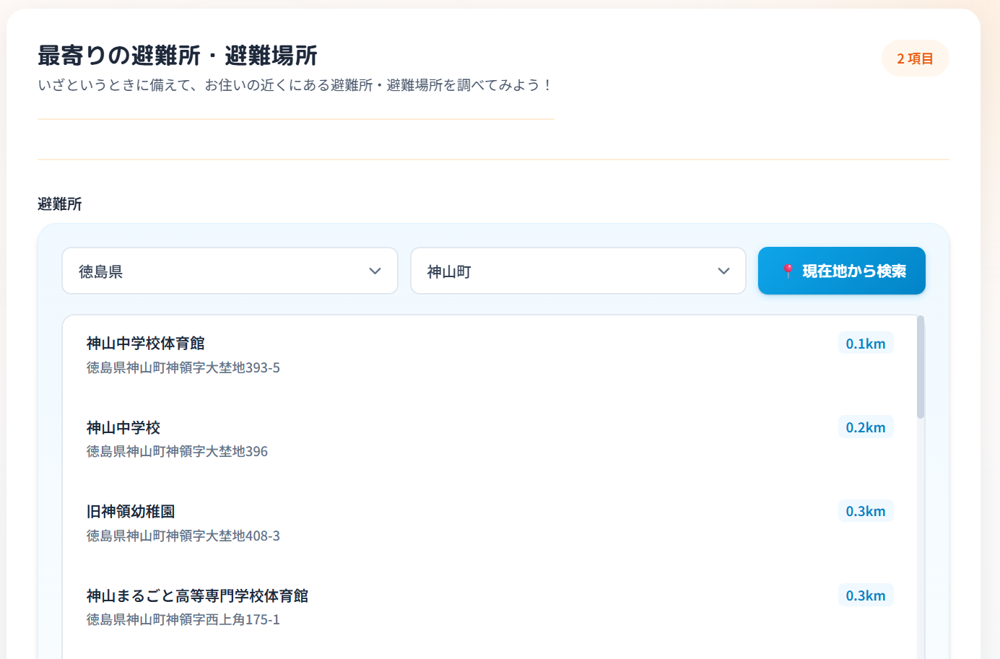
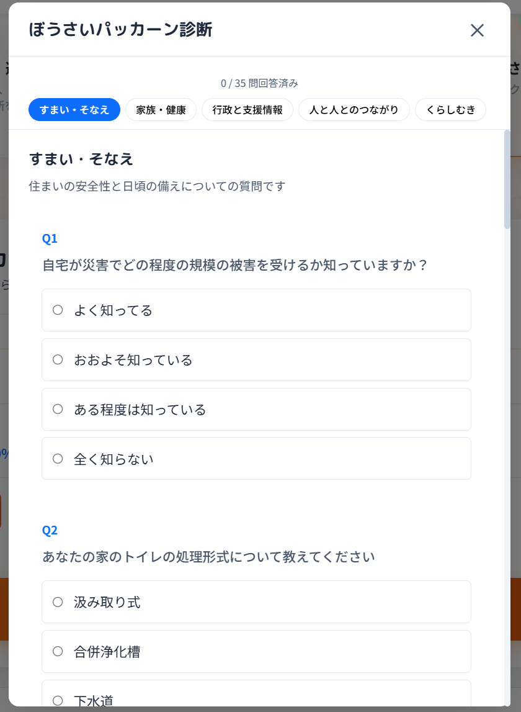
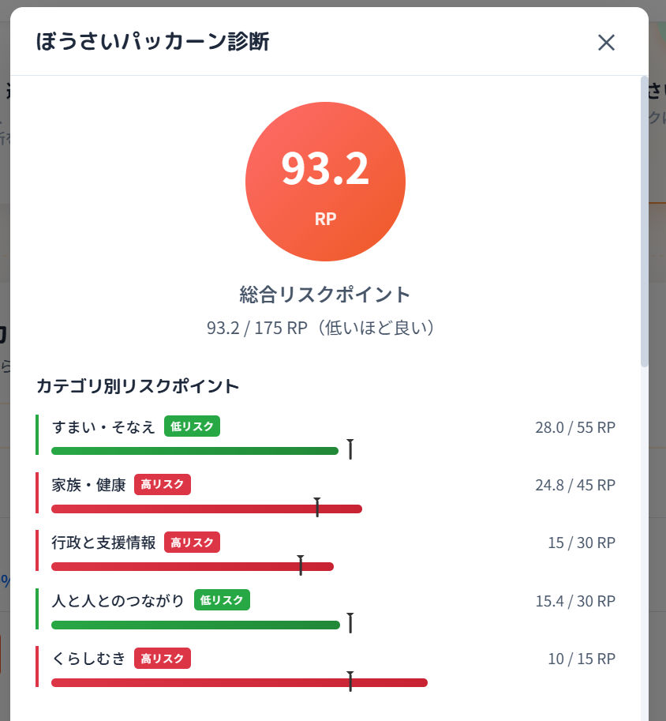
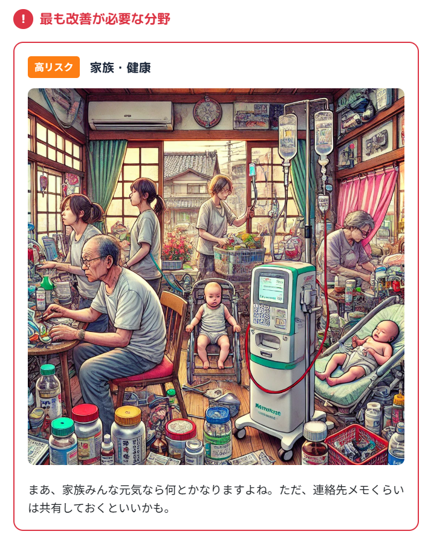
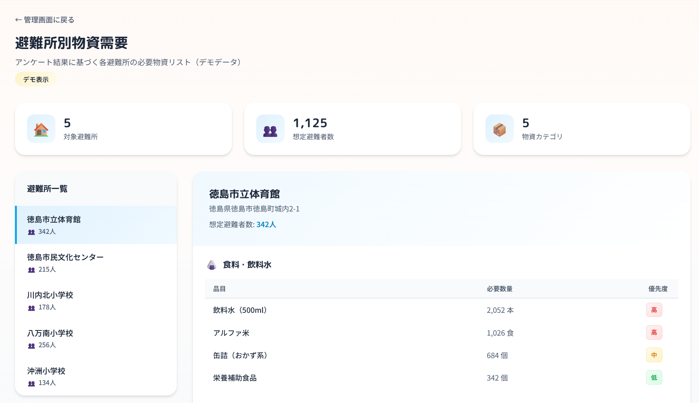
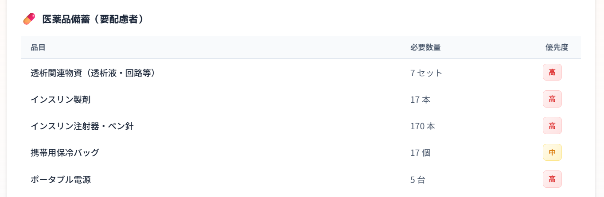
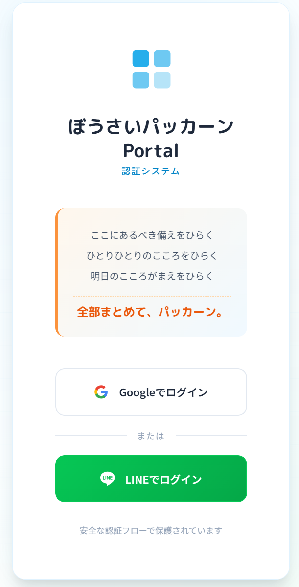

システムURL: https://kokopaka.bousai.live/
| 氏名 | 所属 | 役割 |
|---|---|---|
| 上月康則 | 徳島大学 | 研究基盤・監修 |
| 松家茉莉子 | 徳島大学 | 研究・分析 |
| 清瀬由香 | Code for Tokushima | 企画・デザイン |
| 本橋大輔 | Code for Tokushima | 開発・実装 |
徳島大学 上月研究室の災害関連死研究を基盤としたプロジェクトです。
上月研究室の研究成果（6年間の災害関連死研究）
↓
実装方法を模索
↓
2024年「ぼうさいパッカーン」立ち上げ
↓
進める中で見えてきた課題
↓
2025年「ここパカ診断」で課題を解決
個人情報を極力持たない設計により、利用者も自治体も安心して使えるシステムを実現しています。

自治体に提供されるのは避難所単位の統計データのみです。 個人を特定できる情報は一切含まれないため、自治体は個人情報保護の負担なく防災計画に活用できます。

前作「ぼうさいパッカーン」で開発した、災害関連死を防ぐためのアンケートシステムです。
災害関連死の要因分析から導き出された評価軸：
| カテゴリ | 内容 |
|---|---|
| 家族のこと | 要介護者、乳幼児、持病など |
| コミュニティ | 地域とのつながり、孤立リスク |
| 家屋 | 住居の耐震性、備蓄状況 |
| 情報 | 情報収集力、支援制度の知識 |
| お金 | 経済的な備え、保険加入状況 |


避難所に集まる人たちの特性を事前に把握し、適切な備蓄計画を支援します。

匿名統計データにより、避難所に集まる可能性のある被災者の傾向を分析できます。
| 傾向データ | 備蓄計画への反映 |
|---|---|
| 乳幼児が多い | ミルク・おむつの備蓄増 |
| 糖尿病患者がいる | インシュリンの確保 |
| 透析患者がいる | 救助・搬送計画の事前策定 |
| 高齢者が多い | バリアフリー対応・介護用品 |
エビデンスに基づく防災計画の立案が可能になります。

本システムの開発過程で、避難所APIを開発・公開しました。すでに利用可能です。
| 項目 | 内容 |
|---|---|
| データソース | 国土地理院 + 総務省 |
| 形式 | GeoJSON |
| ホスティング | GitHub Pages（無料公開） |
https://motohasystem.github.io/jp-shelter-api/api/v0/{type}/{cityCode}.json
| type | 説明 |
|---|---|
| evacuation | 指定避難所 |
| emergency | 緊急避難場所 |
詳細: https://zenn.dev/motohasystem/articles/05-2025-11-shelter-api
避難所検索APIでは、以下２件のオープンデータを組み合わせてAPIとして公開しています。


自分らしい備え 心理特性と防災意識を結びつけ、パーソナライズされた対策を提案
データで支える地域防災 匿名化された統計データを自治体の防災計画に活用
研究と実践の橋渡し 上月研究室の災害関連死研究を、誰もが使えるツールとして社会実装
ここにあるべき備えをひらく、 ひとりひとりのこころをひらく、 明日のこころがまえをひらく、
全部まとめて、パッカーン。
2025年12月26日 徳島大学 上月研究室 × Code for Tokushima